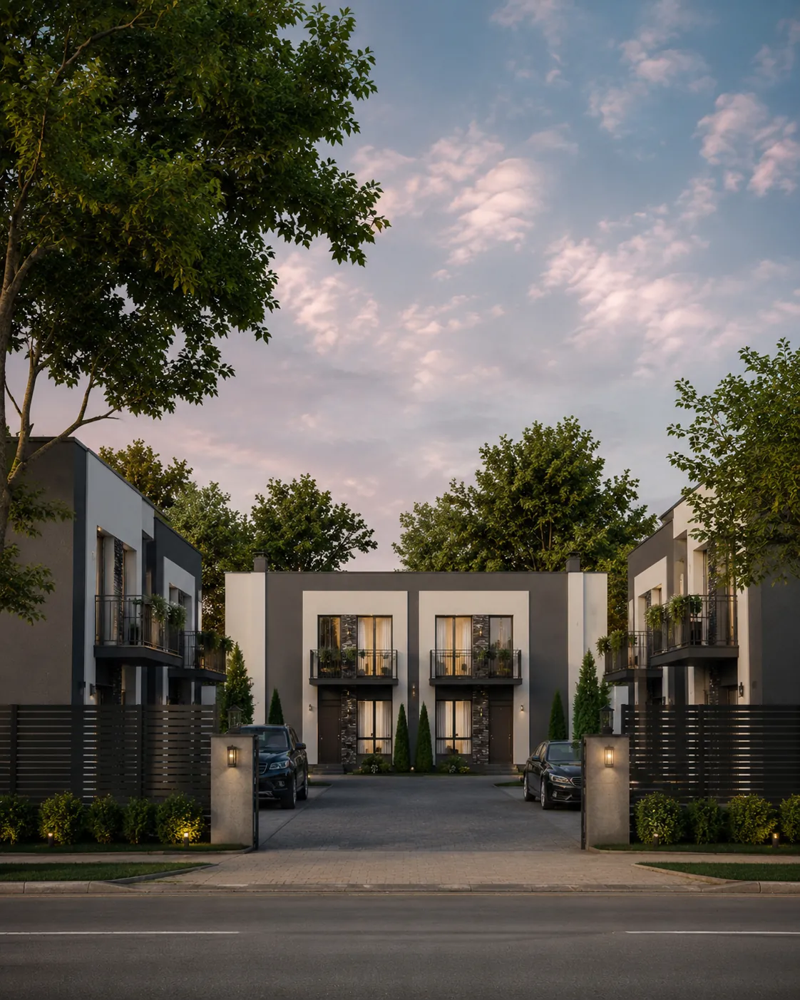

Диагностика
Находим узкие места в маркетинге, продажах и работе с клиентами.
REAL ESTATE / УКРАИНА — ЕВРОПА
Соединяем маркетинг, продажи, цифровые продукты и AI в одну систему, которая приводит к сделке.
STRUCTURE
MEETS GROWTH
Наша команда объединяет опыт работы в недвижимости, маркетинге и управлении строительными проектами, поэтому мы смотрим не на отдельный рекламный канал, а на всю систему привлечения клиента.
Понимаем логику объекта, спроса и клиента.
Находим слабые места между рекламой, сайтом и обработкой заявок.
НЕ ИЩЕМ БЫСТРУЮ УСЛУГУ.
СОБИРАЕМ РЕШЕНИЕ ПОД ЗАДАЧУ.
Каждый проект начинается не с рекламы или разработки. Сначала находим слабое место системы, затем проектируем решение, внедряем его и измеряем результат.
Находим узкие места в маркетинге, продажах и работе с клиентами.
Определяем, какие инструменты действительно нужны именно этому проекту.
Объединяем сайт, CRM, аналитику, AI и автоматизацию в единую систему.
Измеряем показатели, устраняем слабые места и постепенно усиливаем систему.
РАБОТАЛИ С ДЕВЕЛОПЕРОМ КОТТЕДЖНОГО ГОРОДКА / REAL ESTATE / УКРАИНА
Клиент пришёл на старте: не было стратегии, сайта, рекламы, аналитики и системы обработки лидов. RESET собрал основу для выхода проекта на рынок.

VIA.AI — Telegram Mini App для риелторов: поиск объектов, готовые подборки, работа с заявками и управление базой в одном интерфейсе.
Смотреть кейсTELEGRAM
MINI APP
ЧТО СОБРАЛИ
Ремонт и строительство
в Валенсии —
в одном контуре.
ЧТО СОБРАЛИ
Подключаем только те инструменты, которые действительно нужны проекту: рекламу, сайты, CRM, аналитику, SEO и AI-автоматизацию.
Настройка и ведение рекламных кампаний для агентств недвижимости и девелоперов. Работа с офферами, креативами, аудиториями, бюджетами и стоимостью заявки.
Поисковые кампании для недвижимости: структура запросов, объявления, семантика, бюджеты и оптимизация стоимости обращения.
Лендинги, корпоративные сайты и каталоги объектов недвижимости. Адаптивная версия, формы заявок, интеграции с CRM, аналитикой и рекламными системами.
Настройка воронок продаж, форм, уведомлений, интеграций и передачи лидов между сайтом, рекламой и отделом продаж.
SEO-структура сайта, технический аудит, работа со страницами и индексацией, настройка GA4, GTM, Google Search Console и событий.
AI-консультанты, Telegram-боты, автоматические сценарии, работа с базами объектов, голосовые и текстовые интерфейсы.
«RESET помог собрать рабочую digital-систему для проекта: сайт, рекламу, аналитику и CRM в единой логике.»01 / 06
Долгосрочные отношения, повторные внедрения и проекты, которые продолжают развиваться вместе с бизнесом клиента.
Материалы о разработке сайтов, рекламе, SEO, AI и digital-инструментах для недвижимости. На основе реальных задач, проектов и внедрений RESET.
Смотреть все материалы →Сначала разберём рекламу, сайт, аналитику, CRM и работу с заявками. Найдём слабое место и определим, что действительно стоит менять, а что уже работает нормально.
КонтекстРазбираемся в задаче, продукте и текущей системе.
ДиагностикаСмотрим путь клиента, цифры и основные разрывы.
ПланОпределяем приоритетные действия и следующий шаг.